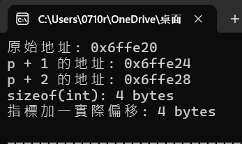

💻了解Computer Science能大幅提升程式能力?
張家銘 · 2025/07/26
其實說白了，打程式就是在請電腦做某些特定的事情。但其中本來就有很多動作是牽涉到到腦運行的底層邏輯，例如C++的指標、或是你想繪製圖表(Bitmap)等等 都是Computer Science涵蓋的範圍。但是台灣的教育制度有點怪，資工算是IC + 一點點的CS 而資管則更像是IM + 一點點CS似乎沒有完全純CS的科系，而且學校學一些CS概念的時候也並沒有把他和程式做連結 這就讓人需要額外去理解。像國外很多頂尖大學都會把CS和程式做連結一起教學，只能說人家會強不是沒有原因。
接下來呢~ 下面就來舉幾個例子讓大家了解為什麼CS那麼重要好了!
👆 C++指標
指標就是byte的觀念
剛開始在學指標一定會很confuse不懂到底是啥邏輯，But actually it's all about bits byte and Binary!首先我們先來看各個型態的變數佔了多少bytes
- int : 4 bytes
- float : 4 bytes
- double : 8 bytes
- char : 1 bytes
那我們知道這個要幹嘛勒? 來參考一下下面的範例
💻 程式碼範例
#include <iostream>
using namespace std;
int main() {
int arr[3] = {10, 20, 30};
int* p = arr;
cout << "原始地址: " << p << endl;
cout << "p + 1 的地址: " << p + 1 << endl;
cout << "p + 2 的地址: " << p + 2 << endl;
cout << "sizeof(int): " << sizeof(int) << " bytes\n";
uintptr_t diff = (uintptr_t)(p + 1) - (uintptr_t)p;
cout << "指標加一實際偏移: " << diff << " bytes" << endl;
return 0;
}
執行結果:
你可以看到印出的位址(指標)偏移了4 這就是因為一個int佔4bytes，並且陣列就是一連串放在一起的指標。而當你把一個指向陣列的指標類型變數做+1(也就是偏移1時)程式就會自動幫你加4bytes了(根據不同類型變數大小) 指向下一個index。
其他類型變數也是相同效果 就不多贅述了。 相信各位一定可以舉一反三 對吧 : )
🗺️ Bitmap?🗣️位元地圖?
我們都知道一張圖片(非向量圖)是由一個 每一格皆包含RGB的元素的二維陣列組成 對吧~? 嗯...對吧?
所以你知道為啥你把一張圖片放很大的時候會發現他開始有點像素感了吧~ 因為他就真的是一格一格的RGB所組成
下面給你看一個簡單的範例，也許你就能夠更加理解。
#include <iostream>
using namespace std;
// 單一像素：RGB
class Pixel {
public:
int r, g, b;
};
int main() {
const int WIDTH = 3;
const int HEIGHT = 2;
// 建立 2D 陣列：每個元素是 Pixel
Pixel image[HEIGHT][WIDTH];
// 填一些顏色
image[0][0] = {255, 0, 0}; // 紅
image[0][1] = {0, 255, 0}; // 綠
image[0][2] = {0, 0, 255}; // 藍
image[1][0] = {255, 255, 0}; // 黃
image[1][1] = {255, 255, 255}; // 白
image[1][2] = {0, 0, 0}; // 黑
}
就是這樣，相信你已經領悟到了一些東東(應該吧)，我們平常在看的圖片基本就是類似上面那樣的邏輯。上面的範例就是一張解析度3x2的圖片，一般圖片螢幕解析度大部分都是1920x1080。而如果真的想要利用bitmap繪製圖表，例如:折線圖那些的 不同語言都會有不同的函式庫，可以去做使用。這邊就留給各位自行去研究了~
那這次文章就先到這啦，如果你有興趣了解更多CS相關知識可以寄信到我的MAIL。我覺得不錯也許就可以再寫一篇文章 或是有問題也可以提問，我看到就會回答。 那就下次見啦 掰掰~~
🔙 回首頁